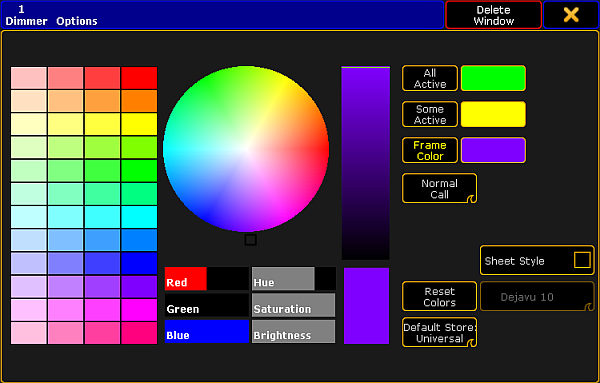
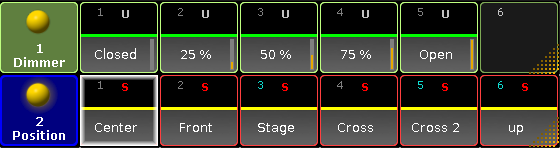

The following example of the preset pool Dimmer displays how to adjust options that are specific for a preset pool.
Open the Options
Tap anywhere in the user-defined area.
The pop-up Create Basic Window opens.
Next, tap Presets.
Then, tap a preset pool you would like to open.
To open the options in the preset pools, tap in the upper left corner of the pool you have opened.
The option dialog opens.

Preset pool options
Hint:
All preset pools have the same pool options.
To adjust the frame color, to reset colors or apply a different style and font see Adjust pool options.
Hint:
To reset the colors in all preset pools, press Setup and tap User Settings – Window Settings – Presets and then subsequently tap Reset All Preset Pool Colors.
Tap All Active and then choose a color from the color table or the color circle, to display that all of the fixtures selected contain this preset.
- The color you have chosen is displayed as a line within the pool object right above the font of the pool object.
Tap Some Active and then choose a color form the color table or the color circle, to display that only some of the fixtures selected contain this preset.
- The color you have chosen is displayed as a line within the pool object right above the font of the pool object.
Example "All Active" and "Some Active":
Select fixture 1 (spot) and fixture 101 (LED lamp) by typing into the command line:
[Channel]> Fixture 1 + Fixture 101 Please
Fixture 1 and fixture 101 have both the preset Dimmer.
Fixture 1 contains the preset Position, fixture 101 does not.

Option – all active and some active
To change the modes Normal Call and Fast Call see Call modes.
To choose the default store option of the preset, tap Default Store Universal. This mode is usually the default for the preset type Dimmer. For more information on the store options of presets see Create presets.
Hint:
It is also possible to set the default of the preset type via Setup:
- Press Setup and tap Patch & Fixture Schedule – Fixture Types – Attribute & Encoder Grouping.
- Then, tap and hold a cell in the column Default Scope.
- The pop-up Select Default Scope opens.
To close the options, tap in the upper right corner of the dialog.
Hint:
To close the preset pool altogether, tap Delete Window.